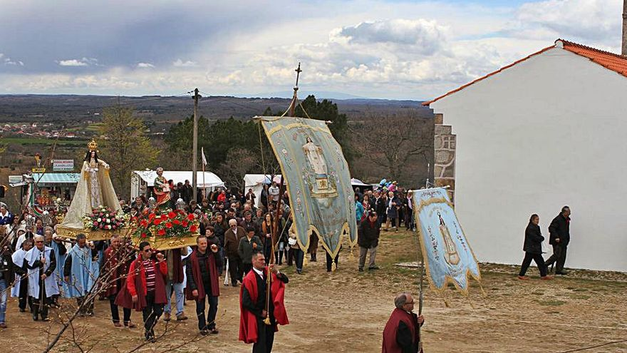

Video-presentacion Zamora
Si el video no se reproduce correctamente pulse aqui
- Localizacion
- Localidades principales
- Geografia de la provincia
- Historia
- Cultura
- Naturaleza
- Tradiciones
- Otros aspectos de interes
LOCALIZACION
La provincia de Zamora cuenta con una superficie de 10 561 km² y limita al norte y sur con las provincias de León y Salamanca respectivamente, al este con la de Valladolid y al oeste con la provincia gallega de Orense y con el distrito portugués de Braganza.
Mapa
Si el mapa superior no funciona haga click aqui
Ir arriba
LOCALIDADES PRINCIPALES
- Zamora ---> 60 297 habitantes
- Benavente ---> 17 523 habitantes
- Toro ---> 8532 habitantes
- Morales del Vino ---> 3030 habitantes
- Villaralbo ---> 1804 habitantes
- Moraleja del Vino ---> 1740 habitantes
- Fuentesaúco ---> 1608 habitantes
- Villalpando ---> 1451 habitantes
- Puebla de Sanabria ---> 1366 habitantes
- San Cristóbal de Entreviñas ---> 1362 habitantes
- Fermoselle ---> 1136 habitantes
- Santa Cristina de la Polvorosa ---> 1070 habitantes
- Coreses ---> 1059 habitantes
- Alcañices ---> 1042 habitantes
- Bermillo de Sayago ---> 1008 habitantes
- Roales ---> 987 habitantes
- Monfarracinos ---> 971 habitantes
- Galende ---> 960 habitantes
- Morales de Toro ---> 940 habitantes
- Corrales del Vino ---> 934 habitantes
Ir arriba
GEOGRAFIA
Comprendida en la submeseta norte, su territorio presenta numerosos contrastes. Destaca una zona montañosa al noroeste, ocupada por parte de los montes de León, con alturas que llegan a los 2127 m (Peña Trevinca). En la zona occidental de la provincia, la sierra de la Culebra registra alturas de hasta 1241 m (Peña Mira) y acoge en su seno la reserva regional de caza de su mismo nombre. Al suroeste de la provincia el río Duero discurre encajonado en una garganta denominada los Arribes del Duero con desniveles de hasta 300 m, constituyendo una frontera natural con Portugal. La zona centro, este y sur presenta la típica llanura meseteña, con excepción de los parajes-miradores de Peñausende, denominados Teso Santo y "El Castillo", ambos cercanos a los 1000 m de altura sobre el nivel del mar. Su altura mínima se registra al suroeste del municipio de Fermoselle sobre los 330 m y su altura máxima en Peña Trevinca 2127 m en el municipio sanabrés de Porto.
Clima
El centro, sureste y noreste de la provincia cuenta con un clima mediterráneo continentalizado, es un clima seco y con temperaturas bajas en invierno, muy calurosas en verano y suaves en las estaciones intermedias. Al noroeste de la provincia, en la comarca de Sanabria, el clima es notablemente más templado y húmedo, al contar con una notable influencia atlántica, aunque en las zonas más elevadas se dan las características del clima de montaña.
Por lo general las temperaturas medias anuales de la provincia de Zamora son relativamente bajas, oscilando entre los 8 °C de Sanabria y los 12,5 °C del entorno de Zamora, la capital provincial. Las precipitaciones son en general escasas en toda la provincia con valores normalmente inferiores a 400 mm/año, solo Sanabria se escapa a esta tendencia seca, llegando a valores de hasta 1400 mm/año, buena parte de ellos en forma de nieve. Así cuanto más al norte y oeste nos encontremos las temperaturas serán más bajas y la pluviosidad mayor.
Si el widget superior no funciona haga click aqui
Ir arriba
HISTORIA
Se tiene constancia de asentamientos en la zona que hoy ocupa Zamora desde la Edad de Bronce, aunque los primeros moradores documentados son los vacceos, tribu celtíbera de la Edad de Hierro que denominó a su castro Ocalam.
Periodo romano
La ciudad comenzó a crecer con la llegada de los romanos, bajo el nombre de Ocellum Durii, formaba parte de la importantísima Vía de la Plata. De ese período son las hazañas de Viriato, personaje lusitano que se enfrentó al Imperio Romano en su imparable expansión por la Península Ibérica, llamado el terror romanorum, el caudillo celebró sus ocho victorias arrancando trozos de los estandartes rojos romanos y colgándolos de su lanza. De ahí viene el diseño actual de la bandera de Zamora con franjas rojas, llamada Seña Bermeja.
Suevos y musulmanes
Zamora aparece documentada por primera vez en el Parroquial Suevo, escrito del año 569 donde recibe el nombre de Senimure, se hacía constar que pertenecía al Reino Suevo. Tras los suevos ocuparon la ciudad los musulmanes, con ellos recibió dos nombres: Azemur y Semurah, de éste último ha derivado el nombre que ha llegado hasta nuestro días.
Conquista cristiana
El rey Alfonso I de Asturias conquistó Zamora para los cristianos a mediados del siglo VIII, a pesar de dotarla de murallas, la ciudad pronto volvió a caer en manos de los musulmanes. Este intercambio de poder se produjo en varias ocasiones a lo largo de la Edad Media.Hasta que el rey Fernando I de Castilla la reconquistó definitivamente para los cristianos en el siglo XI.
Edad media
Fernando I de Castilla cedió Zamora a su hija Doña Urraca, comenzando un período convulso entre sus tres hijos por la dominación de la ciudad. Precisamente Sancho II de Castilla, hermano de doña Urraca, murió a manos del noble zamorano Bellido Dolfos durante el Cerco de Zamora, de estas contiendas se quedó para siempre en el refranero español el dicho de que “no se ganó Zamora en una hora”. Fue entonces cuando se produjo un hecho inmortalizado en el romancero español, en la conocida como Jura de Santa Gadea, el Cid Campeador obligó a Alfonso VI de León a jurar que no había tenido nada que ver con la muerte de su hermano Sancho II. El gran beneficiado fue Alfonso VI, tras la muerte de su hermano heredó el Reino de Castilla, León y Galicia. El hijo de doña Urraca y Raimundo de Borgoña firmó otro de los momentos relevantes en la historia de Zamora. Con el Tratado de Zamora, Alfonso VII cedió el Reino de Portugal a Alfonso Enríquez.
El siglo XII fue un período de gran esplendor, de esa época son las construcciones románicas que han llegado hasta nuestros días. Durante la Guerra Civil Castellana se posicionaron a favor del rey Pedro I de Castilla, incluso llegaron a rebelarse contra Enrique de Trastámara, cuando éste asesinó a su hermano y usurpó el trono. Tras varios meses de sitio, Zamora finalmente capitula ante el coronado rey Enrique II de Castilla.
Edad moderna
La Edad Moderna acabó con la importancia histórica de Zamora. Según se fueron trasladando las fronteras cristianas hacia el sur, se fue perdiendo su valor estratégico. Muchos de sus habitantes se vieron obligados a hacer las Américas, debido a la precaria situación económica.
A principios del siglo XIX, en pleno proceso de recuperación económica, estalló la Guerra de Independencia contra Francia. Los zamoranos fueron valientes intentando repeler el avance de las tropas napoleónicas con inferioridad de hombres y armamento, pero su esfuerzo fue en vano, porque en menos de un día los franceses se hicieron con la ciudad y la ocuparon durante tres años.
Edad contemporanea
La decadencia provocada por el período posguerra, se vio agravada por la poca actividad industrial y comercial, así como por la Desamortización de Mendizábal y el traslado de la Capitanía General a Valladolid. Estos hechos dejaron aislada y empobrecida a una ciudad que tenía prácticamente como única fuente de ingreso la agricultura.
La recuperación económica llegó a finales del siglo XX, cuando se construyeron líneas de ferrocarril y carreteras que volvieron a conectar Zamora con el resto de España.
Ir arriba
CULTURA
Recinto amurallado de Alcañices
El recinto murado de Alcañices es el área amurallada de la villa de Alcañices que ha sido declarado bien de interés cultural en la categoría de conjunto histórico.
La villa de Alcañices, consierada también la capital de la comarca de Aliste, se encuentra situada en el noroeste de la provincia de Zamora y junto a la frontera con Portugal. El conjunto histórico incluye básicamente el barrio Dentro la Villa y en él destacan las estructuras creadas para la defensa de la villa medieval y los edificios de uso civil, considerados auténticos ejemplos de la arquitectura popular alistana.

Iglesia de Santa Maria del Azogue
Situada en el centro de la ciudad de Benavente, es considerada como uno de sus principales monumentos artísticos. Su construcción, iniciada hacia el 1180, época en que esta ciudad fue repoblada por Fernando II de León, es considerada como contemporánea de la iglesia de San Juan del Mercado en la misma villa.
Iniciada en el estilo románico, permaneció buen tiempo inconclusa hasta el impulso restaurador en tiempos de Sancho IV, en el último cuarto del siglo XIII. En el siglo XVI, el templo recibiría las bóvedas de crucería gótica de la nave central, obra costeada por los condes de la villa, cuyas armas heráldicas de adosan en lo alto. en el 1735 se levantó la portada de los pies en sustitución de otra del siglo XII.
La iglesia cuenta con cuatro capillas (destacar la Capilla de Jesús de Nazareno) y una Sacristía, que antiguamente era una capilla más de la iglesia.
Fuerte de San Carlos
El Fuerte de San Carlos es una fortaleza militar española situada en el municipio de Carbajales de Alba de la provincia de Zamora, de la comunidad autónoma de Castilla y León, es un singular ejemplo de fortificación construida entre el s. XVII y el s. XVIII en la provincia de Zamora, dentro del entramado de fortalezas defensivas de la frontera con Portugal.
Es uno de los escasos ejemplos de arquitectura abaluartada conservados que estuvo inmerso en los acontecimientos bélicos con el vecino país vecino.1 Es de planta rectangular con torreones de punta de diamante en las esquinas y un foso, prácticamente colmatado, repite el esquema académico de este tipo de construcciones defensivas. Según las fuentes escritas, su construcción se inicia a principios del s. XVII, reformándose o rematándose en 1702. Su fisonomía completa se puede observar en los planos levantados por Robelín y Moreau en 1721 y 1739 respectivamente, gracias a los cuales conocemos los nombres de sus baluartes: San Amaro, Santa Engracia, de Peñas Coronas y de Portugal.1
Castillo de Fermoselle
El castillo de Fermoselle es una fortaleza situada en el municipio español de Fermoselle (Zamora, Castilla y León).
El castillo pudo ser en origen un asentamiento castreño. Varios han sido sus ilustres moradores, entre ellos doña Urraca que eligió esta fortaleza como lugar de retiro o el obispo Acuña en cuyo castillo se hizo fuerte al comienzo de la guerra de las Comunidades y en cuyas mazmorras tuvo preso al alcalde Ronquillo de Fermoselle.
Existen indicios de que antes de su construcción, su solar estuvo ocupado por un asentamiento castreño. Según fuentes de comienzos del siglo XIII el castillo era propiedad de la diócesis de Zamora. Con anterioridad perteneció a doña Urraca, esposa del rey Fernando II de León. Más tarde, en el siglo XVI fue plaza fuerte en la guerra de las Comunidades y bastión frente a la vecina Portugal, llegando a ser tomado durante la guerra de Restauración portuguesa por las tropas portuguesas en 1654.
Ir arriba
NATURALEZA
Parque natural del Lago de Sanabria
Es un espacio natural protegido español situado en el noroeste de la provincia de Zamora, Castilla y León, en las estribaciones de las sierras Segundera y Cabrera.
El origen de este espacio natural se sitúa en las fases más frías del Cuaternario, cuando en Sanabria se establecieron las condiciones glaciares que afectaron notablemente al modelado de sus montañas. Durante este período, el límite de las nieves perpetuas se estableció en torno a los 1600 m de altitud, lo que permitió que durante la glaciación del Würm en la altiplanicie de la sierra, se establecieran grandes acumulaciones de hielo y nieve, originando un glaciar de meseta o casquete. De él divergían largas y potentes lenguas de hielo encajadas en los anteriores valles fluviales. Hace 10 000 años la glaciación terminó y la lengua glaciar se retiró dejando al descubierto amplios y profundos valles, circos glaciares, rocas aborregadas, estrías glaciares, morrenas, el lago y más de 20 lagunas diseminadas por la sierra.
El lago de Sanabria es el elemento más característico de este territorio, el mayor lago de origen glaciar de la península ibérica, con 318,7ha y una profundidad máxima de 53 m. Además, y dispersas por la sierra, se pueden encontrar más de una veintena de lagunas, diversos cañones demostrativos de la misma acción glaciar cuaternaria e innumerables cascadas y regatos que han dado origen a una zona con increíbles valores estéticos y paisajísticos.
Ambiente Lago de Sanabria
Arribes del Duero
Arribes del Duero es un espacio natural protegido español —declarado parque natural, zona de especial protección para las aves, zona especial de conservación y reserva de la biosfera— que se extiende por el noroeste de la provincia de Salamanca y el sudoeste de la provincia de Zamora, en la comunidad autónoma de Castilla y León, junto a la frontera portuguesa.1
Arribes, arribas y arribanzos son vocablos leoneses utilizados para denominar la garganta fluvial del río Duero y la de sus afluentes Águeda, Esla, Huebra, Tormes y Uces en esta zona.23 Esta geomorfología se caracteriza por una zona de depresión o de altitud más baja y otra de penillanura o de altitud más elevada, siendo los arribes el conjunto de ambas zonas, que se sitúan a orillas de estos ríos.
Lagunas de Villafafila
La reserva natural de Lagunas de Villafáfila es un espacio natural protegido que se encuentra situado en el cuadrante noreste de la provincia de Zamora, Castilla y León, España.1
Las lagunas se sitúan en una zona de encuentro de las tierras de Campos y del Pan, correspondiente al interfluvio de los ríos Esla y Valderaduey. Este espacio se caracteriza por ser una pequeña depresión (675 m de altitud) circundada por suaves tesos, que ha dado lugar a una pequeña cuenca endorreica que es vertebrada a duras penas por el río Salado. La configuración de este territorio da lugar a la formación de balsas de agua de escasa profundidad y superficie menguante en función de la mayor o menor insolación de la época del año.
Sierra de la Culebra
La sierra de la Culebra es un conjunto montañoso español ubicado en el noroeste de la provincia de Zamora y de la comunidad autónoma de Castilla y León.
Su configuración longitudinal hace que abarque parte de las comarcas zamoranas de Sanabria, Carballeda, Aliste y Tábara, limitando al oeste con la vecina Trás-os-Montes de Portugal. En total incluye un extenso territorio de aproximadamente 70 000 ha, de las que 61 305ha han sido declaradas Lugar de Importancia Comunitaria (LIC) y 67 340 ha han sido declaradas Reserva Regional de Caza. Esta sierra es uno de los espacios naturales protegidos por la citada Comunidad, estando aún pendiente de definir la que será su definitiva figura de protección. En los últimos años se ha debatido la propuesta de que esta sierra sea declarada parque natural, medida a la que se han opuesto los vecinos de los municipios afectados por considerarla perjudicial para sus intereses económicos.
Ir arriba
TRADICIONES
La cultura popular de la provincia de Zamora se manifiesta en una variada muestra de fiestas y costumbres, todas ellas generalmente ligadas a su gastronomía tradicional.
El año comienza con las "máscaras y disfraces", festividad de origen ancestral, en las que participan personajes grotescos, ataviados con vestidos estrafalarios de colores, que corren por las calles saltando, persiguiendo o haciendo bromas a las gentes y repitiendo una antigua tradición. Son los denominados Carochos, Tafarrón, Vaca Bayona o Zangarrón, según la denominación al uso de cada pueblo.
Numerosas son las tradicionales romerías, que principalmente se suelen concentrar en la primavera y otoño. Entre ellas destacan las de "La Luz" en Moveros, la de "Los Pendones" de Fariza, la de "Donado", la de "La Alcobilla" en Rábano, la de "La Tuiza" en Lubián .
Muchas localidades acompañan sus fiestas tradicionales con afamados festejos taurinos. Entre ellos destacan "el toro enmaromado" de Benavente (la víspera del Corpus), "los espantes de toros" de Fuentesaúco (primer fin de semana de julio), las corridas de toros de San Pedro de ciudad de Zamora (29 de junio) o los "encierros" de Villalpando o Fermoselle.
Destaca la "Semana Santa zamorana", declarada Fiesta de Interés Turístico Internacional. Es considerada como una de las más notables de España por su singularidad, austeridad, expresividad y religiosidad. Su origen se remonta al siglo xiv y con el paso de los años se ha convertido en la fiesta mayor de la ciudad. Destaca por la puesta en escena de sus desfiles procesionales, con una notable participación popular y la belleza de los recorridos por las calles del casco urbano antiguo. De notable interés es también la Semana Santa de Bercianos de Aliste, caracterizada por su sobriedad y emotividad, en especialmente el viernes santo por la tarde, cuando los vecinos de esta localidad se congregan junto a la iglesia para desclavar un crucificado y llevarlo en procesión entonando un popular miserere, y ataviados con túnicas y caperuz blanco que serán su mortaja, y también con la tradicional capa alistana.

Ir arriba
OTROS ASPECTOS DE INTERES
Gastronomia
La gastronomía zamorana corresponde a las tradiciones y costumbres culinarias de la provincia de Zamora en España. La cocina pertenece a parte de las cocinas de León, aunque posee mucha influencia de la cocina gallega y asturiana. Se caracteriza por la mezcla de la austeridad en los ingredientes y la abundancia de carnes. Los platos suelen tener un fuerte carácter artesanal y un origen humilde, mezcla de cocina pastoril y agricultora. Zamora posee una importante producción de vinos con denominación de origen: Tierra del Vino de Zamora. Una de las características de Zamora es la división que hace el río Duero separando la provincia en dos partes bien diferenciadas en lo que a su cultivo se refiere, proporcionando una denominación Tierra del Pan, al norte, por el abundante cultivo de trigo y la Tierra del Vino, al sur, debido a su producción.
Fauna
En los bosques se encuentran las especies: arrendajo, becada, camachuelo común, mirlo común, mito, pico menor, pico picapinos, pito real, torcecuello, trepador azul, zorzal común, alcaudón común, alcaudón real, agateador, críalo y abilargo. El águila calzada, el milano negro, el milano real, el ratonero común, el autillo, el búho chico, el cárabo y el chotacabras gris están presentes en estas zonas también.
Cerca de las orillas se puede ver chorlitejos chicos, fochas comunes, gallinas de agua, garzas reales, martines pescadores y mirlos acuáticos
Es notable el número de murciélagos, zorros, jabalíes, ginetas, conejos, liebres, erizos, comadrejas, garduñas y lirones careto. Más escasos son los ejemplares de gato montés, tejón, lobo y nutria. También se cree que queda algún ejemplar de lince ibérico.
Existe una gran diversidad de especies de peces: barbo común, boga, colmilleja, pardilla y calandino, gallego, bermejuela, escallo, lucio, carpín, carpa, gobio, tenca, gambusia, percasol y black-bass. Los esturiones y la anguila son especies amenazadas.
Flora
Los olivos, los almendros, los naranjos y las higueras son los muy numerosos. Gracias a una accidentada topografía todavía se conservan numerosos bosques, en su mayoría robledales, de gran valor ecológico. Otras especies habituales son alcornoques, vides, almeces, encinas y enebros, chumberas, jaras, piornos, retamas y tomillos.
Los bosques más conocidos de este paraje son el almezal de Mieza, ya que es el más extenso de Europa y en el enebral cercano a Cozcurrita donde se encuentra una especie única en Europa. Los bosques del monte de Gudín (Vilvestre), los almezales de Aldeadávila y el cercano a Pereña, el de Alduyan (Fornillos de Fermoselle) y el de Fregeneda son también relevantes.